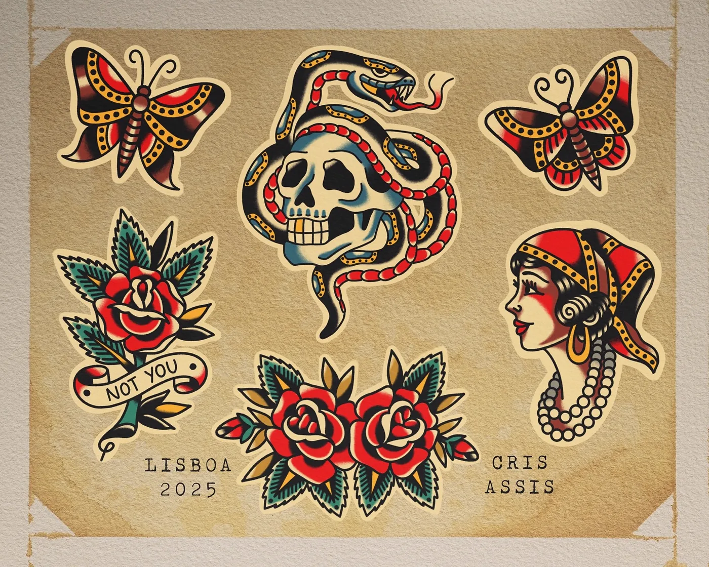
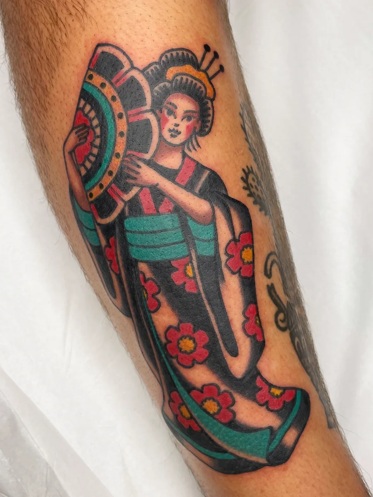
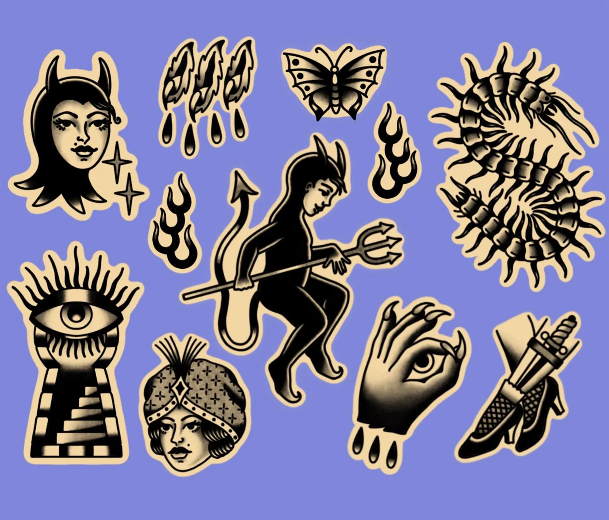
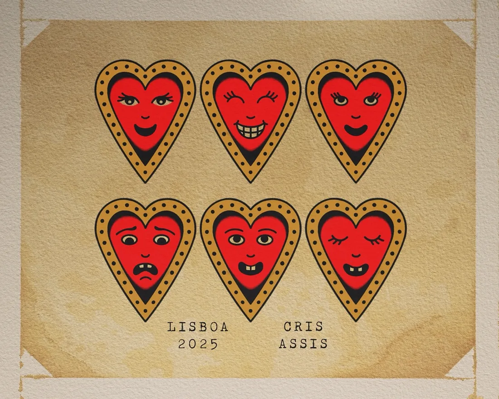
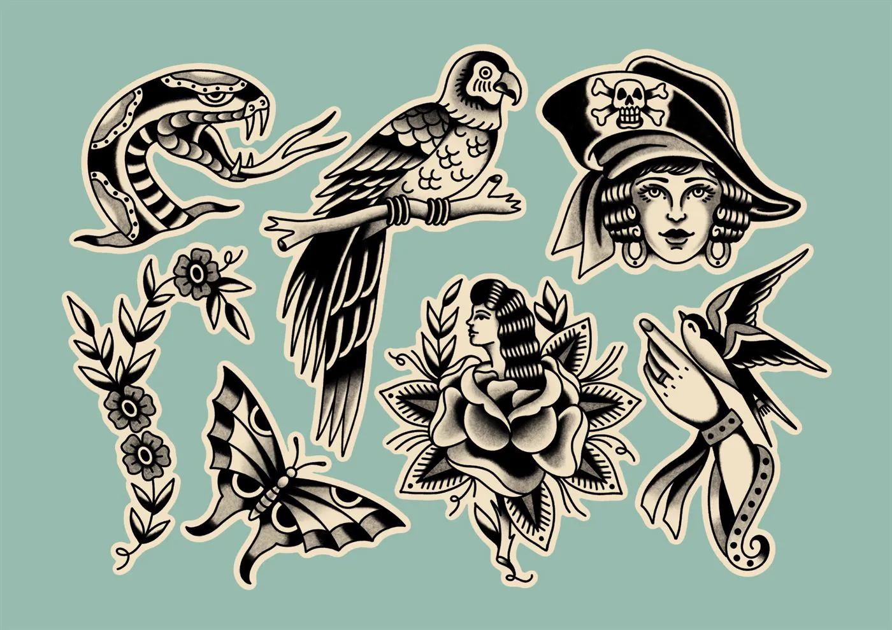
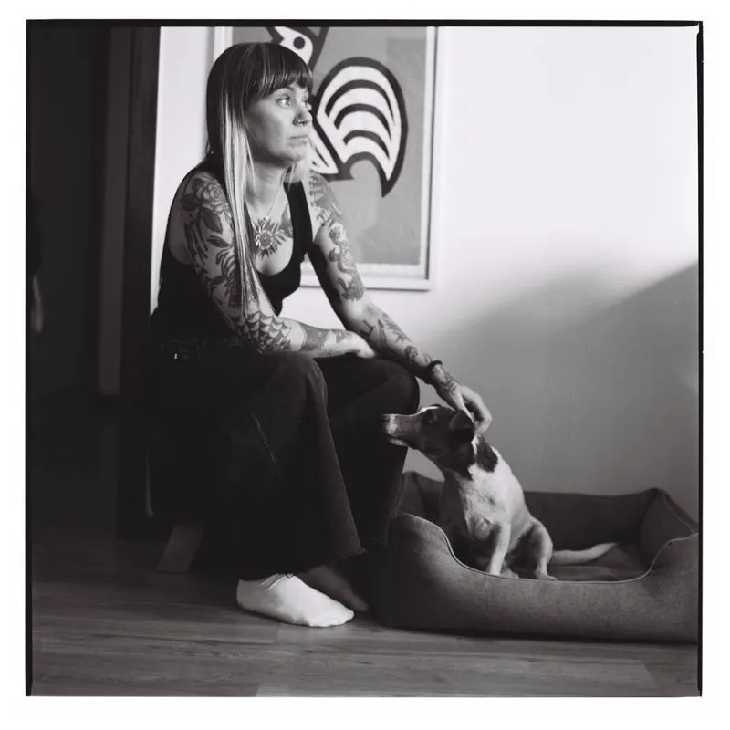

Manda a ideia
Pela DM do Instagram: o desenho ou a referência, o sítio do corpo e o tamanho aproximado.
LISBOA · TATUAGEM TRADICIONAL
Tradicional, neo-tradicional e blackwork. Linha preta firme e cor que aguenta os anos.


Pin-up, pavão, sagrado coração, cobra, lobo. Cor cheia ou só preto, sempre com contorno forte.
Folhas desenhadas e pintadas por ela. Viste um que é a tua cara? Manda print pela DM e pergunta.
PERGUNTAR PELA DM →Folhas desenhadas e pintadas por ela. Viste um que é a tua cara? Manda print pela DM e pergunta.
PERGUNTAR PELA DM →


Pela DM do Instagram: o desenho ou a referência, o sítio do corpo e o tamanho aproximado.
Ela responde com o orçamento e o dia para tatuar.
Chegas no dia combinado e sais com a peça na pele.

Tatuo em Lisboa e desenho os meus próprios flashes. Gosto do tradicional: linha preta firme, cor sólida e desenho que se lê de longe.
Também faço neo-tradicional e blackwork. Se tens uma ideia, manda pela DM e vemos juntos como fica melhor na pele.
Manda a tua ideia pela DM do Instagram. Lisboa, Portugal.
MARCAR PELA DM → @crisassistattoo